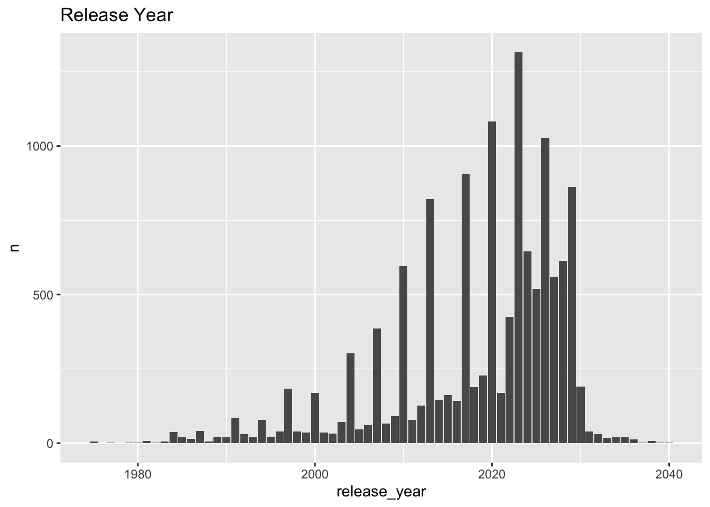
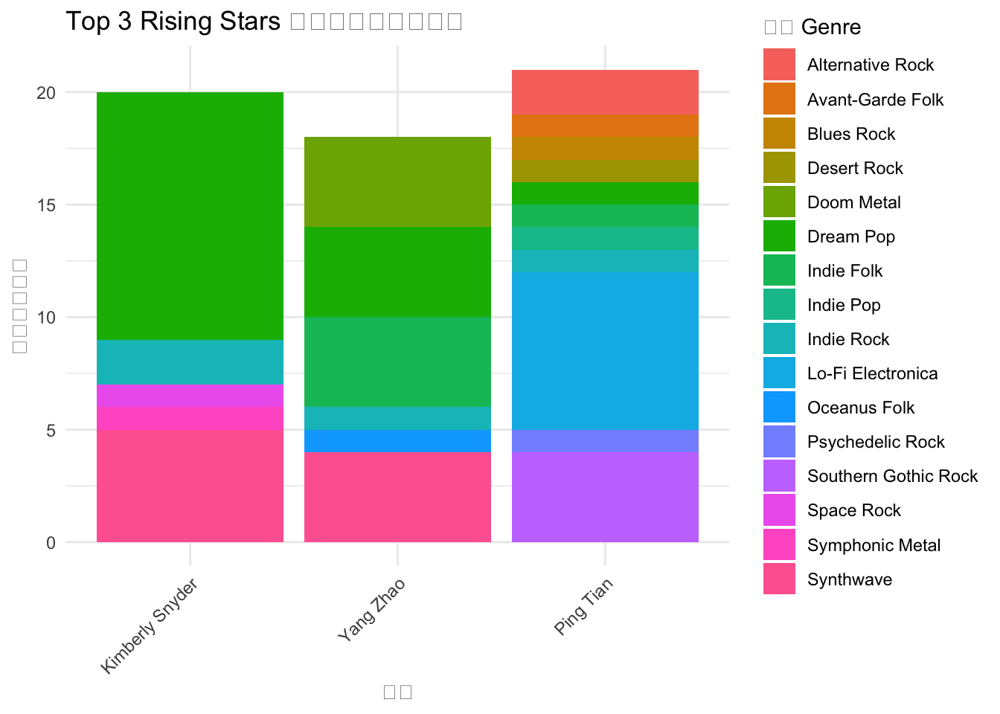
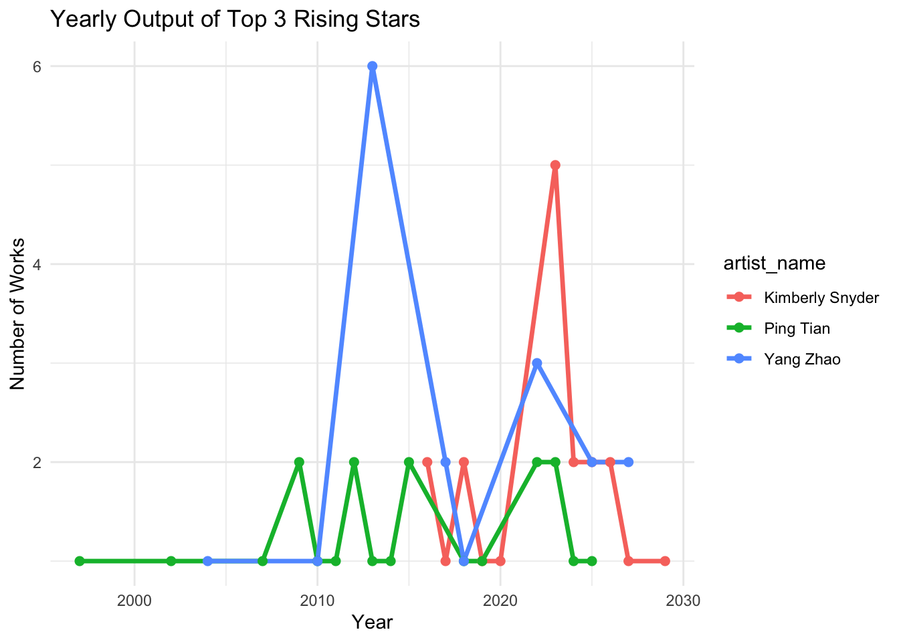
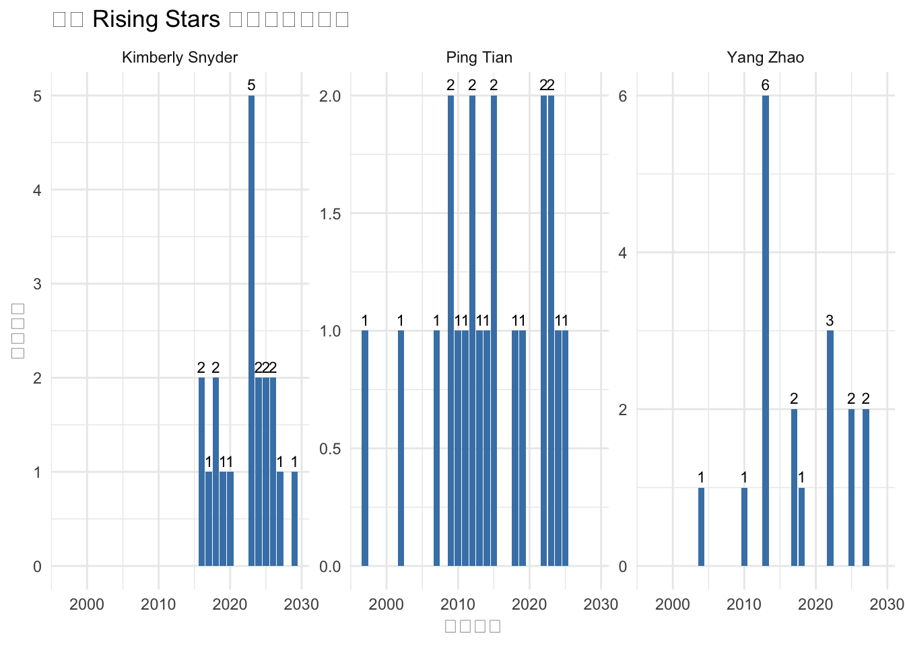
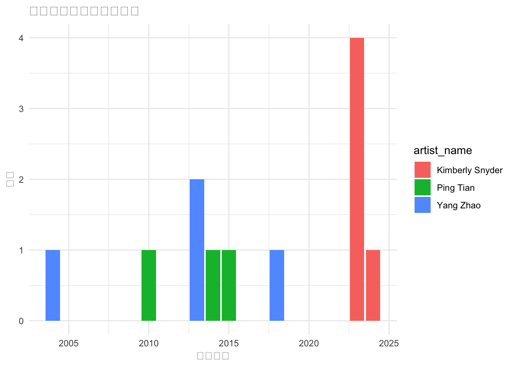

pacman::p_load(igraph, tidygraph, ggraph,
visNetwork, lubridate, clock,
tidyverse, graphlayouts,
concaveman, ggforce, jsonlite, dplyr, SmartEDA, knitr)Take-home Exercise 2
Getting Started
In this exercise, we will be exploring the Vast Challenge 2024 - Mini-Challenge 1
Introduction
Setting the scene
Sailor Shift is a global music icon who began her career on the island nation of Oceanus, rooted in the local genre of Oceanus Folk. From modest beginnings, she rose to international fame, initially performing with the all-female band Ivy Echoes (2023–2026), before achieving a solo breakthrough in 2028 with a viral single that topped global charts — an unprecedented milestone for Oceanus Folk.
Since then, Sailor has released highly successful albums almost annually, explored Indie Pop and Indie Folk, and collaborated widely. Despite branching out, she often returns to Oceanus Folk, playing a major role in expanding its influence globally. Her dual passion for spreading Oceanus Folk and uplifting lesser-known artists is reflected in her frequent collaborations.
Sailor’s fame has also brought attention to her former Ivy Echoes bandmates, together, they’ve helped elevate Oceanus Folk into a vibrant and respected genre, inspiring a new generation of Oceanus artists.
As Sailor returns home in 2040, journalist Silas Reed is preparing a retrospective piece, “Oceanus Folk: Then-and-Now”, and has compiled a large knowledge graph of artists, albums, songs, and relationships.
Key Tasks
Use the visualizations to develop a profile of what it means to be a rising star in the music industry.
Visualize the careers of three artists. Compare and contrast their rise in popularity and influence.
Using this characterization, give three predictions of who the next Oceanus Folk stars with be over the next five years.
Load Packages
Import Data
kg <- fromJSON("data/MC1_graph.json")Inspect Structure
str(kg, max.level = 1)List of 5
$ directed : logi TRUE
$ multigraph: logi TRUE
$ graph :List of 2
$ nodes :'data.frame': 17412 obs. of 10 variables:
$ links :'data.frame': 37857 obs. of 4 variables:Extracting the edges and nodes tables
nodes_tbl <- as_tibble(kg$nodes)
edges_tbl <- as_tibble(kg$links) Initial EDA
ggplot(data = edges_tbl,
aes(y = `Edge Type`)) +
geom_bar()
The code chunk below uses ggplot2 functions to reveal the frequency distribution of Node Type field of nodes_tbl.
ggplot(data = nodes_tbl,
aes(y = `Node Type`)) +
geom_bar()
Creating Knowledge Graph
Mapping from node id to row index
id_map <- tibble(id = nodes_tbl$id,
index = seq_len(
nrow(nodes_tbl)))Map source and target IDs to row indices
edges_tbl <- edges_tbl %>%
left_join(id_map, by = c("source" = "id")) %>%
rename(from = index) %>%
left_join(id_map, by = c("target" = "id")) %>%
rename(to = index)Filter out any unmatched (invalid) edges
edges_tbl <- edges_tbl %>%
filter(!is.na(from), !is.na(to))Creating tidygraph
graph <- tbl_graph(nodes = nodes_tbl,
edges = edges_tbl,
directed = kg$directed)class(graph)[1] "tbl_graph" "igraph" Visualising the knowledge graph
set.seed(1234)Visualising the whole graph
ggraph(graph, layout = "fr") +
geom_edge_link(alpha = 0.3,
colour = "gray") +
geom_node_point(aes(color = `Node Type`),
size = 4) +
geom_node_text(aes(label = name),
repel = TRUE,
size = 2.5) +
theme_void()Warning: ggrepel: 17411 unlabeled data points (too many overlaps). Consider
increasing max.overlaps
Visualising the sub-graph
In this section, we are interested to create a sub-graph base on MemberOf value in Edge Type column of the edges data frame.
Filtering edges to only “MemberOf”
graph_memberof <- graph %>%
activate(edges) %>%
filter(`Edge Type` == "MemberOf")Extracting only connected nodes (i.e., used in these edges)
used_node_indices <- graph_memberof %>%
activate(edges) %>%
as_tibble() %>%
select(from, to) %>%
unlist() %>%
unique()Keeping only those nodes
graph_memberof <- graph_memberof %>%
activate(nodes) %>%
mutate(row_id = row_number()) %>%
filter(row_id %in% used_node_indices) %>%
select(-row_id) # optional cleanupPlotting the sub-graph
ggraph(graph_memberof,
layout = "fr") +
geom_edge_link(alpha = 0.5,
colour = "gray") +
geom_node_point(aes(color = `Node Type`),
size = 1) +
geom_node_text(aes(label = name),
repel = TRUE,
size = 2.5) +
theme_void()Warning: ggrepel: 790 unlabeled data points (too many overlaps). Consider
increasing max.overlaps
筛选“Rising Stars”候选人：
• notable（上榜） 的作品。
• 从这些作品反向识别相关表演者（PerformerOf 边）。
构建影响力数据表（即 artist_influence.csv）：
• 对每位 rising star，找出他们所有演唱的作品（无论是否上榜）。
• 提取每个作品的类型（Song/Album）、流派、发行年份、上榜年份等属性。
取 Oceanus Folk Rising Stars 并导出 CSV
# 提取 PerformerOf 的边
graph_performers <- graph %>%
activate(edges) %>%
filter(`Edge Type` == "PerformerOf")
# 获取 Performer 节点、作品信息
artist_influence <- graph_performers %>%
activate(edges) %>%
as_tibble() %>%
left_join(nodes_tbl %>% select(id, name, `Node Type`, genre, notable, release_date, notoriety_date),
by = c("target" = "id")) %>%
rename(work_id = target,
artist_id = source,
work_name = name,
work_type = `Node Type`) %>%
left_join(nodes_tbl %>% select(id, name, stage_name),
by = c("artist_id" = "id")) %>%
rename(artist_name = name) %>%
filter(work_type %in% c("Song", "Album"),
notable == TRUE) %>%
select(artist_id, artist_name, stage_name, work_id, work_name, work_type, genre,
release_date, notoriety_date, notable)
# 查看前几行确认结果
head(artist_influence)# A tibble: 6 × 10
artist_id artist_name stage_name work_id work_name work_type genre
<int> <chr> <chr> <int> <chr> <chr> <chr>
1 1 Carlos Duffy <NA> 0 Breaking These Chai… Song Ocea…
2 2 Min Qin <NA> 0 Breaking These Chai… Song Ocea…
3 3 Xiuying Xie <NA> 0 Breaking These Chai… Song Ocea…
4 7 Xiulan Zeng <NA> 5088 Echoes of a Lonely … Song Lo-F…
5 7 Xiulan Zeng <NA> 5 Unshackled Heart Song Lo-F…
6 7 Xiulan Zeng <NA> 6231 Echoes from Zion's … Album Lo-F…
# ℹ 3 more variables: release_date <chr>, notoriety_date <chr>, notable <lgl># 导出为 CSV
write_csv(artist_influence, "artist_influence.csv")转换 release_date 和 notoriety_date 为整数型年份
influence <- artist_influence %>%
mutate(
release_year = as.integer(release_date),
notoriety_year = as.integer(notoriety_date),
is_notable = if_else(is.na(notoriety_date), FALSE, TRUE)
)检查类型
str(influence)tibble [12,926 × 13] (S3: tbl_df/tbl/data.frame)
$ artist_id : int [1:12926] 1 2 3 7 7 7 7 7 7 8 ...
$ artist_name : chr [1:12926] "Carlos Duffy" "Min Qin" "Xiuying Xie" "Xiulan Zeng" ...
$ stage_name : chr [1:12926] NA NA NA NA ...
$ work_id : int [1:12926] 0 0 0 5088 5 6231 9808 13567 16514 5 ...
$ work_name : chr [1:12926] "Breaking These Chains" "Breaking These Chains" "Breaking These Chains" "Echoes of a Lonely Gaze" ...
$ work_type : chr [1:12926] "Song" "Song" "Song" "Song" ...
$ genre : chr [1:12926] "Oceanus Folk" "Oceanus Folk" "Oceanus Folk" "Lo-Fi Electronica" ...
$ release_date : chr [1:12926] "2017" "2017" "2017" "2026" ...
$ notoriety_date: chr [1:12926] NA NA NA "2026" ...
$ notable : logi [1:12926] TRUE TRUE TRUE TRUE TRUE TRUE ...
$ release_year : int [1:12926] 2017 2017 2017 2026 2026 2029 2018 2025 2013 2026 ...
$ notoriety_year: int [1:12926] NA NA NA 2026 NA NA 2018 NA NA NA ...
$ is_notable : logi [1:12926] FALSE FALSE FALSE TRUE FALSE FALSE ...可视化检查
influence %>%
count(release_year) %>%
ggplot(aes(x = release_year, y = n)) +
geom_col() +
labs(title = "Release Year")
构建 Rising Star 画像指标
特征画像（Rising Star 的画像）：
持续产出作品：每年发布至少 1-2 首作品，保持活跃是基础。
跨年份影响力增长：不仅集中爆红，而是连续几年有 notable（上榜）作品，展示持续影响力。
artist_summary <- influence %>%
group_by(artist_name) %>%
summarise(
total_works = n(), # 总作品数
years_active = n_distinct(release_year), # 活跃年份数
first_notoriety = min(notoriety_year, na.rm = TRUE),
notable_works = sum(is_notable), # 上榜作品数
notable_years = n_distinct(notoriety_year[!is.na(notoriety_year)])
) %>%
mutate(
avg_works_per_year = total_works / years_active,
rising_star_score = notable_works * 2 + total_works + notable_years * 1.5
) %>%
arrange(desc(rising_star_score))Warning: There were 5055 warnings in `summarise()`.
The first warning was:
ℹ In argument: `first_notoriety = min(notoriety_year, na.rm = TRUE)`.
ℹ In group 1: `artist_name = "Aarav Balan"`.
Caused by warning in `min()`:
! no non-missing arguments to min; returning Inf
ℹ Run `dplyr::last_dplyr_warnings()` to see the 5054 remaining warnings.kable(head(artist_summary, 10))| artist_name | total_works | years_active | first_notoriety | notable_works | notable_years | avg_works_per_year | rising_star_score |
|---|---|---|---|---|---|---|---|
| Kimberly Snyder | 20 | 11 | 2023 | 5 | 2 | 1.818182 | 33.0 |
| Ping Tian | 21 | 16 | 2010 | 3 | 3 | 1.312500 | 31.5 |
| Yang Zhao | 18 | 8 | 2004 | 4 | 3 | 2.250000 | 30.5 |
| Qiang Tang | 15 | 9 | 2010 | 4 | 4 | 1.666667 | 29.0 |
| Urszula Stochmal | 15 | 11 | 2004 | 4 | 4 | 1.363636 | 29.0 |
| Lei Duan | 14 | 10 | 1991 | 4 | 4 | 1.400000 | 28.0 |
| Ping Meng | 14 | 11 | 2011 | 4 | 4 | 1.272727 | 28.0 |
| Szymon Pyć | 20 | 14 | 2010 | 2 | 2 | 1.428571 | 27.0 |
| Gang Chen | 9 | 8 | 2013 | 5 | 5 | 1.125000 | 26.5 |
| Jay Walters | 16 | 15 | 1992 | 3 | 3 | 1.066667 | 26.5 |
# Step 1: 获取前 10 位 Rising Stars 的名字
top3_artists <- artist_summary %>%
slice_max(rising_star_score, n = 3) %>%
pull(artist_name)
# Step 2: 从 influence 中筛选这些艺人
top10_genres <- influence %>%
filter(artist_name %in% top3_artists) %>%
count(artist_name, genre, sort = TRUE)
# Step 3: 对每位艺人提取出现次数最多的 genre（主打曲风）
top10_main_genres <- top10_genres %>%
group_by(artist_name) %>%
slice_max(n, n = 1) %>%
ungroup()
# Step 4: 展示结果
top10_main_genres %>%
rename(
`Artist Name` = artist_name,
`Main Genre` = genre,
`作品数` = n
) %>%
kable(caption = "Top 10 Rising Stars 的主打曲风（根据上榜作品）")| Artist Name | Main Genre | 作品数 |
|---|---|---|
| Kimberly Snyder | Dream Pop | 11 |
| Ping Tian | Lo-Fi Electronica | 7 |
| Yang Zhao | Doom Metal | 4 |
| Yang Zhao | Dream Pop | 4 |
| Yang Zhao | Indie Folk | 4 |
| Yang Zhao | Synthwave | 4 |
# 重新生成 Top 10 艺人名字
top3_artists <- artist_summary %>%
slice_max(rising_star_score, n = 3) %>%
pull(artist_name)
# 筛选这些艺人的作品，并统计每个 genre 数量
genre_distribution <- influence %>%
filter(artist_name %in% top3_artists) %>%
count(artist_name, genre)
# 绘制 genre 分布柱状图（按艺人分组）
ggplot(genre_distribution, aes(x = reorder(artist_name, -n), y = n, fill = genre)) +
geom_bar(stat = "identity", position = "stack") +
labs(
title = "Top 3 Rising Stars 的上榜作品流派分布",
x = "艺人",
y = "上榜作品数量",
fill = "曲风 Genre"
) +
theme_minimal() +
theme(axis.text.x = element_text(angle = 45, hjust = 1))
生成三位 Rising Star 的成长对比图
# 选择前三名
top3 <- artist_summary %>%
filter(artist_name != "Sailor Shift") %>%
slice_max(rising_star_score, n = 3) %>%
pull(artist_name)
artist_summary %>%
filter(artist_name %in% top3) %>%
arrange(desc(rising_star_score)) %>%
kable()| artist_name | total_works | years_active | first_notoriety | notable_works | notable_years | avg_works_per_year | rising_star_score |
|---|---|---|---|---|---|---|---|
| Kimberly Snyder | 20 | 11 | 2023 | 5 | 2 | 1.818182 | 33.0 |
| Ping Tian | 21 | 16 | 2010 | 3 | 3 | 1.312500 | 31.5 |
| Yang Zhao | 18 | 8 | 2004 | 4 | 3 | 2.250000 | 30.5 |
Popularity
How well-known or consumed an artist is (volume, reach, visibility)
Number of songs / albums
Number of notable songs
Annual output trend
Influence How much an artist shapes or connects others (network role, creativity)
Degree centrality (how many people they collaborate with)
Betweenness centrality (bridge role)
Eigenvector centrality (importance of connections)
Measuring Popularity
artist_summary <- influence %>%
group_by(artist_name) %>%
summarise(
total_works = n(),
notable_works = sum(is_notable),
years_active = n_distinct(release_year)
)
artist_summary <- artist_summary %>%
mutate(
popularity_score = notable_works * 2 + total_works + years_active
)Measuring Influence
# 每年作品数折线图
influence %>%
filter(artist_name %in% top3) %>%
count(artist_name, release_year) %>%
ggplot(aes(x = release_year, y = n, color = artist_name)) +
geom_line(size = 1.2) +
geom_point(size = 2) +
labs(title = "Yearly Output of Top 3 Rising Stars", x = "Year", y = "Number of Works") +
theme_minimal()Warning: Using `size` aesthetic for lines was deprecated in ggplot2 3.4.0.
ℹ Please use `linewidth` instead.
influence %>%
filter(artist_name %in% top3) %>%
count(artist_name, release_year) %>%
ggplot(aes(x = release_year, y = n)) +
geom_col(fill = "steelblue") +
geom_text(aes(label = n), vjust = -0.5, size = 3) +
facet_wrap(~ artist_name, scales = "free_y") +
labs(
title = "三位 Rising Stars 的年度作品产出",
x = "发行年份",
y = "作品数量"
) +
theme_minimal()
# 上榜年份柱状图
influence %>%
filter(artist_name %in% top3, is_notable) %>%
count(artist_name, notoriety_year) %>%
ggplot(aes(x = notoriety_year, y = n, fill = artist_name)) +
geom_col(position = "dodge") +
labs(title = "上榜作品数量（按年份）", x = "上榜年份", y = "数量") +
theme_minimal()
未来五年预测：潜在的 Oceanus Folk 明星
根据 Rising Star 的画像特征，我们预测以下三类人可能成为下一代明星：
1. 多次演唱 Oceanus Folk 且作品逐步增长的新人
2. 近期首次上榜，正在形成连续影响力的艺术家
3. 作品参与类型多元（既有主唱、又涉制作）的全能型人才
Step 2：预测下一批 Rising Stars（近期开始上榜，但尚未爆红）
next_stars <- influence %>%
filter(
genre == "Oceanus Folk",
release_year >= 2035,
artist_name != "Sailor Shift" # 🚫 排除超级明星
) %>%
group_by(artist_name) %>%
summarise(
total = n(),
notable = sum(is_notable),
first_release = min(release_year, na.rm = TRUE)
) %>%
mutate(potential_score = total + notable * 2) %>%
arrange(desc(potential_score)) %>%
slice_head(n = 3)
next_stars# A tibble: 3 × 5
artist_name total notable first_release potential_score
<chr> <int> <int> <int> <dbl>
1 Copper Canyon Ghosts 3 2 2035 7
2 Selkie's Hollow 2 0 2037 2
3 The Brine Choir 2 0 2035 2人物介绍自动生成
# Step 1: 获取 next_stars 的名字
next_star_names <- next_stars$artist_name
intro_text <- influence %>%
filter(artist_name %in% next_star_names) %>%
group_by(artist_name) %>%
summarise(
years = paste0(min(release_year, na.rm = TRUE), "–", max(release_year, na.rm = TRUE)),
notable_hits = sum(is_notable),
total_works = n()
) %>%
mutate(
profile = glue::glue("{artist_name} 活跃于 {years} 年间，发行了共 {total_works} 部作品，其中 {notable_hits} 首/张作品曾登上榜单，展现出持续上升的影响力。")
)
intro_text$profileCopper Canyon Ghosts 活跃于 2034–2035 年间，发行了共 7 部作品，其中 5 首/张作品曾登上榜单，展现出持续上升的影响力。
Selkie's Hollow 活跃于 2037–2037 年间，发行了共 2 部作品，其中 0 首/张作品曾登上榜单，展现出持续上升的影响力。
The Brine Choir 活跃于 2034–2038 年间，发行了共 4 部作品，其中 0 首/张作品曾登上榜单，展现出持续上升的影响力。